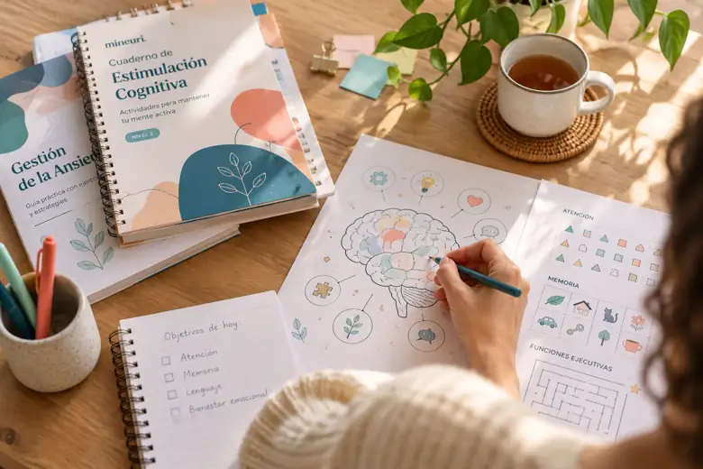

Biblioteca digital Mineuri
Recursos listos
Recursos listos
para usar
Guías, cuadernos y actividades de psicología y neuropsicología para pacientes, familias, profesionales y centros.

No hay coincidencias
Prueba con otra temática o pulsa «Limpiar filtros» para explorar todo el catálogo.
El catálogo muestra únicamente recursos publicados en Mineuri. Los recursos gratuitos se descargan directamente. En los recursos de pago, el botón «Comprar» aparece solo cuando Stripe y la entrega segura están disponibles.